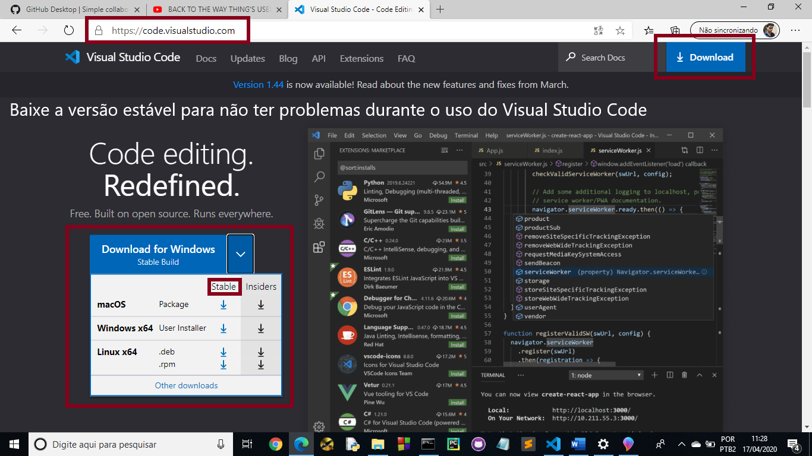
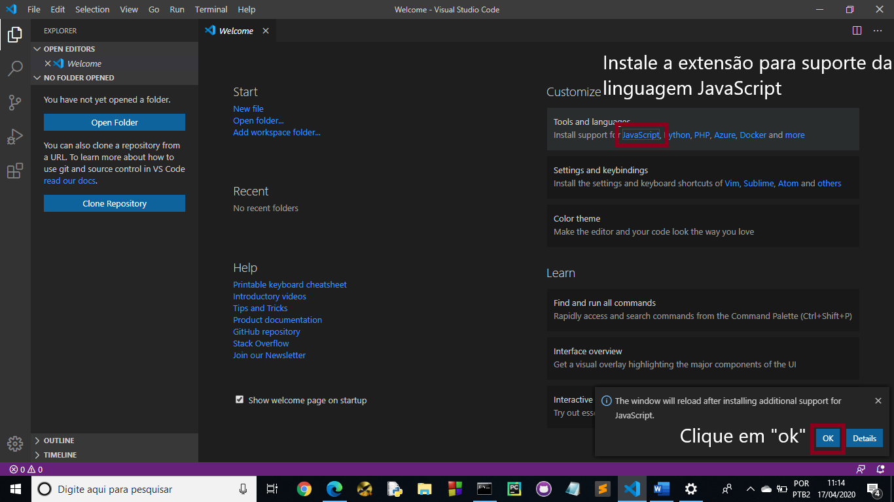
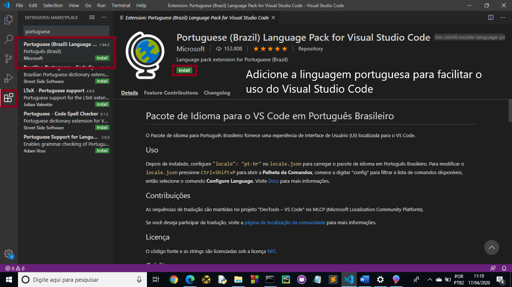
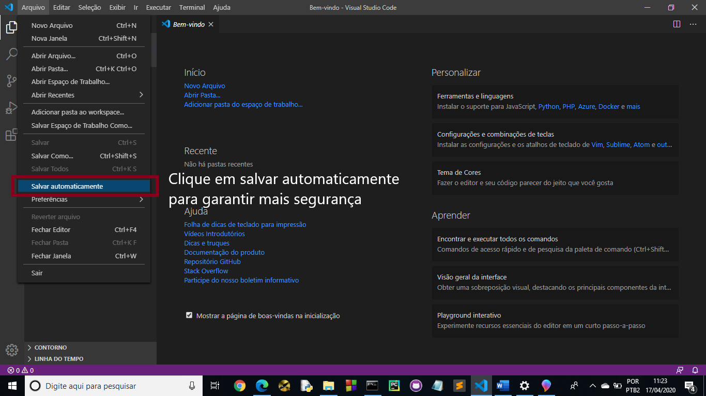
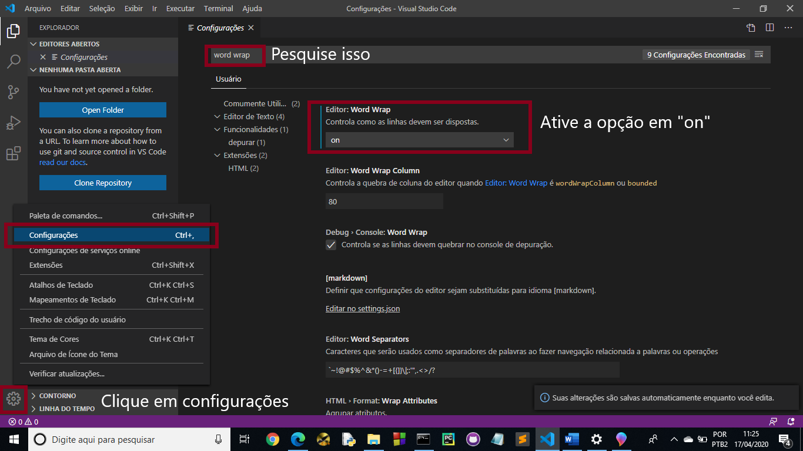
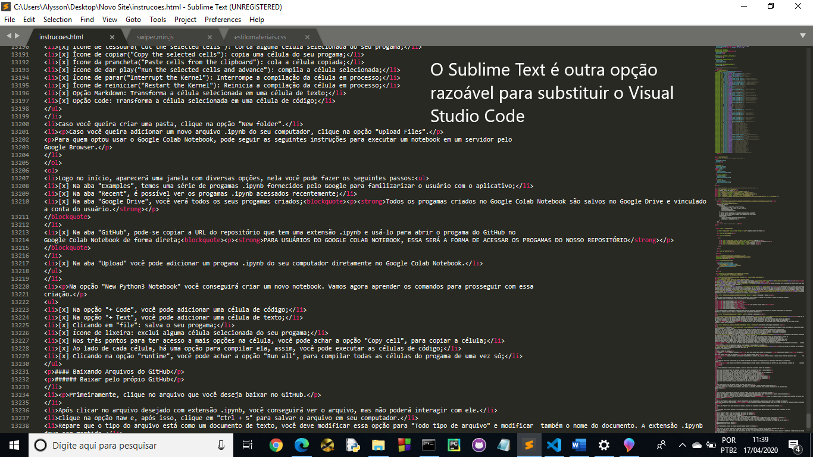
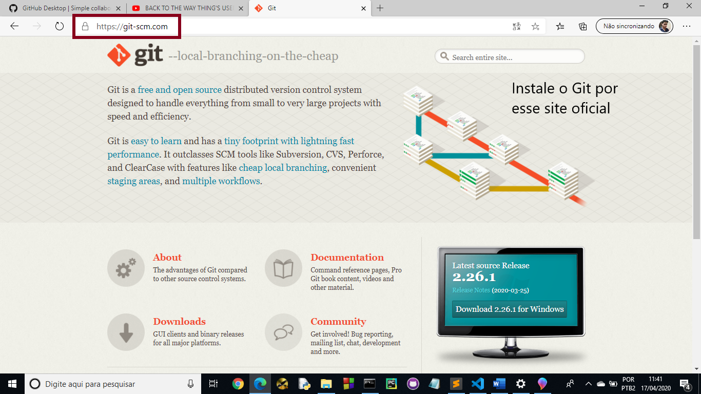
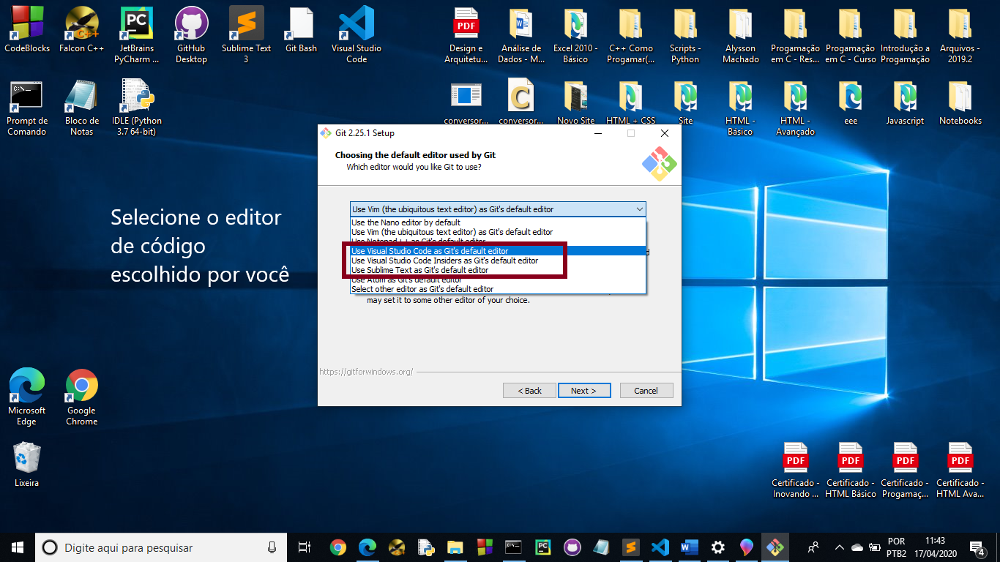
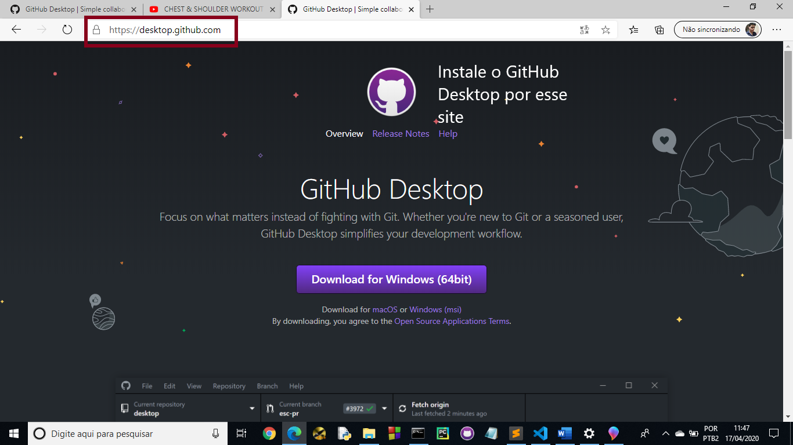
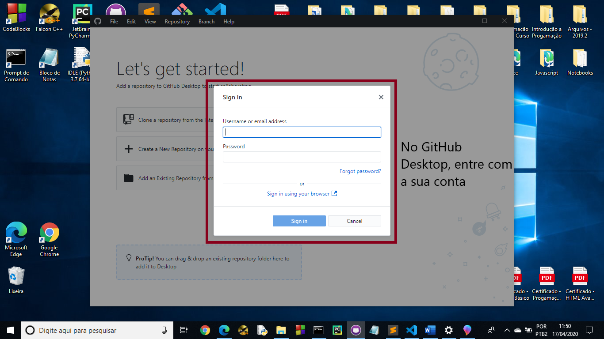

Nas aulas anteriores, vimos o que são Git e GitHub. Agora vamos preparar as ferramentas que usaremos nas próximas atividades.
Nesta aula, vamos instalar os programas necessários para acompanhar as atividades. Você precisará de um navegador, um editor de código, do Git e do GitHub Desktop.
| Sites Oficiais para baixar os navegadores: |
|---|
| Google Chrome |
| Microsoft Edge |
| Safari (Disponível só para macOS) |
Sobre o Visual Studio Code, há algumas recomendações durante a instalação:

Entre no site oficial do Visual Studio Code, clicando aqui, para conseguir baixar esse editor de código.

O Visual Studio Code oferece extensões para várias linguagens e ferramentas. Instale apenas as extensões de que precisar para as atividades.

Se preferir usar a interface em português, instale o pacote de idioma correspondente e selecione-o nas configurações do editor.

Você pode ativar o salvamento automático nas configurações do editor para reduzir o risco de perder alterações não salvas.

A opção Word Wrap quebra visualmente linhas longas para que caibam na janela do editor. Ela não altera o conteúdo do arquivo e pode facilitar a leitura.
O Sublime Text é outra opção para editar código. Acesse o site oficial para baixá-lo. O Visual Studio Code e o Sublime Text têm recursos e extensões diferentes; escolha o editor que preferir.

Este site também foi editado com o Sublime Text. Você pode usar esse editor ou qualquer outro que atenda às atividades do curso.
| Sites Oficiais para baixar o Git e o GitHub Desktop: |
|---|
| Git SCM |
| GitHub Desktop |

Baixe o Git no site oficial. Sempre confira a origem dos instaladores antes de executá-los.

Durante a instalação do Git, você poderá escolher um editor padrão e revisar outras opções. Se não tiver certeza, mantenha as configurações recomendadas pelo instalador.

Instale o GitHub Desktop por esse site oficial. Com ele, você poderá agilizar ainda mais o seu trabalho.

No GitHub Desktop, entre com a sua conta criada. Caso você ainda tenha dúvidas, veja a aula anterior clicando aqui.
Na próxima aula, vamos usar essas ferramentas para criar e trabalhar com repositórios.
Está gostando do conteúdo? Compartilhe com seus amigos para que eles possam aprender também! Ajude a tornar a educação gratuita mais plural e democrática.